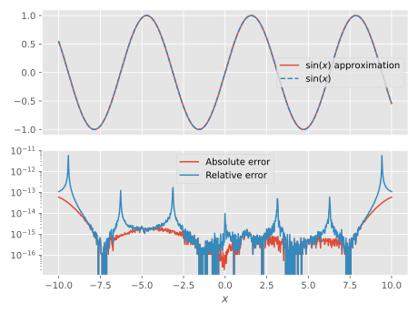

Divided differences
The divided differences of a function $f$ with respect to a set of interpolation points $\{\zeta_i\}$ is defined as [McCurdy]
\[\begin{equation} \label{eqn:div-diff-def} \divdiff(\zeta_{i:j})f \defd \frac{1}{2\pi\im} \oint \diff{z} \frac{f(z)}{(z-\zeta_i)(z-\zeta_{i+1})...(z-\zeta_j)}, \end{equation}\]
where the integral is taken along a simple contour encircling the poles once. A common approach to evaluate the divided differences of $f$, and an alternative definition, is the recursive scheme
\[\begin{equation} \label{eqn:div-diff-recursive} \tag{\ref{eqn:div-diff-def}*} \divdiff(\zeta_{i:j},z)f \defd \frac{\divdiff(\zeta_{i:j-1},z)f-\divdiff(\zeta_{i:j})f}{z - \zeta_j}, \quad \divdiff(\zeta_i,z)f \defd \frac{\divdiff(z)f-\divdiff(\zeta_i)f}{z - \zeta_i}, \quad \divdiff(z)f \defd f(z), \end{equation}\]
which, however, is prone to catastrophic cancellation for very small $\abs{\zeta_i-\zeta_j}$. This can be partially alleviated by employing BigFloats, but that will only postpone the breakdown, albeit with ~40 orders of magnitude, which might be enough for practical purposes (but much slower).
MatrixPolynomials.ts_div_diff_table is based upon the fact the divided differences in a third way can be computed as [McCurdy][Opitz]
\[\begin{equation} \label{eqn:div-diff-mat-fun} \tag{\ref{eqn:div-diff-def}†} \divdiff(\zeta_{i:j})f \defd \vec{e}_1^\top f(\mat{Z}_{i:j}), \end{equation}\]
i.e. the first row of the function $f$ applied to the matrix
\[\begin{equation} \mat{Z}_{i:j}\defd \bmat{ \zeta_i&1&\\ &\zeta_{i+1}&1\\ &&\ddots&\ddots\\ &&&\ddots&1\\ &&&&\zeta_j}. \end{equation}\]
The right-eigenvectors are given by [Opitz]
\[\begin{equation} \label{eqn:div-diff-mat-right-eigen} \mat{Q}_\zeta = \{q_{ik}\}, \quad q_{ik} = \begin{cases} \prod_{j=i}^{k-1} (\zeta_k - \zeta_j)^{-1}, & i < k,\\ 1, & i = k,\\ 0, & \textrm{else}, \end{cases} \end{equation}\]
and similarly, the left-eigenvectors are given by
\[\begin{equation} \label{eqn:div-diff-mat-left-eigen} \tag{\ref{eqn:div-diff-mat-right-eigen}*} \mat{Q}_\zeta^{-1} = \{\conj{q}_{ik}\}, \quad \conj{q}_{ik} = \begin{cases} \prod_{j=i+1}^k (\zeta_i - \zeta_j)^{-1}, & i < k,\\ 1, & i = k,\\ 0, & \textrm{else}, \end{cases} \end{equation}\]
such that
\[\begin{equation} \divdiff(\zeta_{i:j})f= \mat{Q}_\zeta\mat{F}_\zeta\mat{Q}_\zeta^{-1},\quad \mat{F}_\zeta \defd \bmat{f(\zeta_i)\\&f(\zeta_{i+1})\\&&\ddots\\&&&f(\zeta_j)}. \end{equation}\]
However, straight evaluation of $(\ref{eqn:div-diff-mat-right-eigen},\ref{eqn:div-diff-mat-left-eigen})$ is prone to the same kind of catastrophic cancellation as is $\eqref{eqn:div-diff-recursive}$, so to evaluate $\eqref{eqn:div-diff-mat-fun}$, one instead turns to Taylor or Padé expansions of $f(\mat{Z}_{i:j})$ [McCurdy][Caliari], or interpolation polynomial basis changes [Zivcovich].
As an illustration, we show the divided differences of exp over 100 points uniformly spread over $[-2,2]$, calculated using $\eqref{eqn:div-diff-recursive}$, in Float64 and BigFloat precision, along with a Taylor expansion of $\eqref{eqn:div-diff-mat-fun}$:

It can clearly be seen that the Taylor expansion is not susceptible to the catastrophic cancellation.
Thanks to the general implementation of divided differences using Taylor expansions of the desired function, it is very easy to generate Newton polynomials approximating the function on an interval:
julia> import MatrixPolynomials: Leja, points, NewtonPolynomial, ⏃
julia> μ = 10.0 # Extent of interval
10.0
julia> m = 40 # Number of Leja points
40
julia> ζ = points(Leja(μ*range(-1,stop=1,length=1000),m))
40-element Array{Float64,1}:
10.0
-10.0
-0.01001001001001001
5.7757757757757755
-6.596596596596597
8.398398398398399
-8.6986986986987
-3.053053053053053
3.2132132132132134
9.43943943943944
-9.51951951951952
-4.794794794794795
7.137137137137137
1.5515515515515514
-7.757757757757758
9.7997997997998
-1.6116116116116117
-9.83983983983984
4.614614614614615
8.91891891891892
-5.7157157157157155
2.3723723723723724
-9.11911911911912
7.757757757757758
-3.873873873873874
6.416416416416417
-8.218218218218219
9.91991991991992
-0.8108108108108109
-9.93993993993994
3.973973973973974
-7.137137137137137
9.1991991991992
-2.3523523523523524
0.8108108108108109
-9.67967967967968
9.63963963963964
5.235235235235235
-5.275275275275275
8.078078078078079
julia> d = ⏃(sin, ζ, 1, 0, 1)
40-element Array{Float64,1}:
-0.5440211108893093
-0.05440211108893093
0.00010554419095304635
0.00042707706157334835
0.00017816519362596795
-0.00015774261733182256
-3.046393737965622e-6
-1.7726427136510242e-6
-1.2091185654301347e-7
8.298167162094031e-8
1.623156704750302e-9
-2.1182984780033414e-9
3.072198477098241e-11
2.690974958064657e-11
7.708729505182354e-13
-1.385345395017015e-13
2.081712029555509e-15
6.103669805230243e-16
4.2232933731665444e-18
-2.098152059762693e-18
7.153277579328475e-21
6.390881616124369e-21
7.322223484376659e-23
-1.3419887223602703e-23
-4.050939196813086e-26
2.4794777140850798e-26
1.268544482329477e-28
-3.581342740292682e-29
2.7876085130074983e-31
4.786776652095869e-32
8.943705105911237e-36
-5.432439158165548e-35
9.88206793819289e-38
5.559232062626121e-38
-1.2016071877913981e-41
-4.710497689585078e-41
7.660823607389171e-45
3.728816926131357e-44
-4.378275580359998e-48
-2.577149389756008e-47
julia> np = NewtonPolynomial(ζ, d)
Newton polynomial of degree 39 on -10.0..10.0
julia> x = range(-μ, stop=μ, length=1000)
-10.0:0.02002002002002002:10.0
julia> f_np = np.(x);
julia> f_exact = sin.(x);Behind the scenes, MatrixPolynomials.taylor_series is used to generate the Taylor expansion of $\sin(x)$, and when an approximation of $\sin(\tau \mat{Z})$ has been computed, the full divided difference table $\sin(\mat{Z})$ is recovered using MatrixPolynomials.propagate_div_diff.

Reference
MatrixPolynomials.⏃ — Function⏃(f, ζ, args...)Compute the divided differences of f at ζ, using a method that is optimized for the function f, if one is available, otherwise fallback to MatrixPolynomials.ts_div_diff_table.
MatrixPolynomials.std_div_diff — Functionstd_div_diff(f, ζ, h, c, γ)Compute the divided differences of f at h*(c .+ γ*ζ), where ζ is a vector of (possibly complex) interpolation points, using the standard recursion formula.
MatrixPolynomials.ts_div_diff_table — Functionts_div_diff_table(f, ζ, h, c, γ; kwargs...)Compute the divided differences of f at h*(c .+ γ*ζ), where ζ is a vector of (possibly complex) interpolation points, by forming the full divided differences table using the Taylor series of f(H) (computed using taylor_series). If there is a scaling relationship available for f, the Taylor series of f(τ*H) is computed instead, and the full solution is recovered using propagate_div_diff.
MatrixPolynomials.φₖ_div_diff_basis_change — Functionφₖ_div_diff_basis_change(k, ζ[; θ=3.5, s=1])Specialized interface to div_diff_table_basis_change for the φₖ functions. θ is the desired radius of convergence of the Taylor series of φₖ, and s is the scaling-and-squaring parameter, which if set to zero, will be calculated to fulfill θ.
MatrixPolynomials.div_diff_table_basis_change — Functiondiv_diff_table_basis_change(f, ζ[; kwargs...])Construct the table of divided differences of f at the interpolation points ζ, based on the algorithm on page 26 of
- Zivcovich, F. (2019). Fast and accurate computation of divided differences for analytic functions, with an application to the exponential function. Dolomites Research Notes on Approximation, 12(1), 28–42.
MatrixPolynomials.min_degree — Functionmin_degree(::typeof(exp), θ)Minimum degree of Taylor polynomial to represent exp to machine precision, within a circle of radius θ.
Taylor series
MatrixPolynomials.TaylorSeries — TypeTaylorSeries(d, c)Represents the Taylor series of a function as
\[f(x) = \sum_{k=0}^\infty c_k x^{d_k},\]
where dₖ = d(k) and cₖ = c(k).
MatrixPolynomials.taylor_series — Functiontaylor_series(::typeof(exp))Generates the TaylorSeries of exp(x) = ∑ₖ x^(k) 1 / Γ(k + 1).
Example
julia> taylor_series(exp)
1 + x + 0.5x^2 + 0.16666666666666666x^3 + ...taylor_series(::typeof(sin))Generates the TaylorSeries of sin(x) = ∑ₖ x^(2k + 1) (-1) ^ k / Γ(2k + 2).
Example
julia> taylor_series(sin)
x - 0.16666666666666666x^3 + 0.008333333333333333x^5 - 0.0001984126984126984x^7 + ...taylor_series(::typeof(cos))Generates the TaylorSeries of cos(x) = ∑ₖ x^(2k) (-1) ^ k / Γ(2k + 1).
Example
julia> taylor_series(cos)
1 - 0.5x^2 + 0.041666666666666664x^4 - 0.001388888888888889x^6 + ...taylor_series(::typeof(sinh))Generates the TaylorSeries of sinh(x) = ∑ₖ x^(2k + 1) 1 / Γ(2k + 2).
Example
julia> taylor_series(sinh)
x + 0.16666666666666666x^3 + 0.008333333333333333x^5 + 0.0001984126984126984x^7 + ...taylor_series(::typeof(cosh))Generates the TaylorSeries of cosh(x) = ∑ₖ x^(2k) 1 / Γ(2k + 1).
Example
julia> taylor_series(cosh)
1 + 0.5x^2 + 0.041666666666666664x^4 + 0.001388888888888889x^6 + ...taylor_series(::typeof(φ₁))Generates the TaylorSeries of φ₁(x) = ∑ₖ x^(k) 1 / Γ(k + 2).
Example
julia> taylor_series(φ₁)
1 + 0.5x + 0.16666666666666666x^2 + 0.041666666666666664x^3 + ...taylor_series(::Type{T}, ::typeof(exp), n; s=1, θ=3.5) where TCompute the Taylor series of exp(z/s), with n terms, or as many terms as required to achieve convergence within a circle of radius θ, whichever is largest.
MatrixPolynomials.closure — Functionclosure(x::Number)Generates the closure type of xⁿ as n → ∞, i.e. a scalar.
closure(x::Matrix)Generates the closure type of xⁿ as n → ∞, i.e. a Matrix.
closure(x::Diagonal)Generates the closure type of xⁿ as n → ∞, i.e. a Diagonal.
closure(x::LowerTriangular)Generates the closure type of xⁿ as n → ∞, i.e. a LowerTriangular.
closure(x::UpperTriangular)Generates the closure type of xⁿ as n → ∞, i.e. a UpperTriangular.
closure(x::Bidiagonal)Generates the closure type of xⁿ as n → ∞, i.e. a UpperTriangular or LowerTriangular, depending on x.uplo.
Scaling
For the computation of $\exp(A)$, a common approach when $|A|$ is large is to compute $[\exp(A/s)]^s$ instead. This is known as scaling and squaring, if $s$ is selected to be a power-of-two. Similar relationships can be found for other functions and are implemented for some using MatrixPolynomials.propagate_div_diff.
MatrixPolynomials.propagate_div_diff — Functionpropagate_div_diff(::typeof(exp), expτH, J, args...)Find the divided differences of exp by utilizing that $\exp(a+b)=\exp(a)\exp(b)$.
propagate_div_diff(::typeof(φ₁), φ₁H, J, H, τ)Find the divided differences of φ₁ by solving the ODE
\[\dot{\vec{y}}(t) = \mat{H} \vec{y}(t) + \vec{e}_1, \quad \vec{y}(0) = 0,\]
by iterating
\[\vec{y}_{j+1} = \vec{y}_j + \tau\varphi_1(\tau\mat{H})(\mat{H}\vec{y}_j + \vec{e}_1), \quad j=0,...,J-1.\]
propagate_div_diff(::typeof(sin), sinH, J, H, τ)Find the divided differences of sin; see propagate_div_diff_sin_cos.
propagate_div_diff(::typeof(cos), cosH, J, H, τ)Find the divided differences of cos; see propagate_div_diff_sin_cos.
MatrixPolynomials.propagate_div_diff_sin_cos — Functionpropagate_div_diff_sin_cos(sinH, cosH, J)Find the divided differences tables of sin and cos simultaneously, by utilizing the double-angle formulæ
\[\sin2\theta = 2\sin\theta\cos\theta, \quad \cos2\theta = 1 - \sin^2\theta,\]
recursively, doubling the angle at each iteration until the desired angle is achieved.
Bibliography
- CaliariCaliari, M. (2007). Accurate evaluation of divided differences for polynomial interpolation of exponential propagators. Computing, 80(2), 189–201. DOI: 10.1007/s00607-007-0227-1
- KandolfKandolf, P., Ostermann, A., & Rainer, S. (2014). A residual based error estimate for Leja interpolation of matrix functions. Linear Algebra and its Applications, 456(nil), 157–173. DOI: 10.1016/j.laa.2014.04.023
- McCurdyMcCurdy, A. C., Ng, K. C., & Parlett, B. N. (1984). Accurate computation of divided differences of the exponential function. Mathematics of Computation, 43(168), 501–501. DOI: 10.1090/s0025-5718-1984-0758198-0
- OpitzOpitz, G. (1964). Steigungsmatrizen. ZAMM - Journal of Applied Mathematics and Mechanics / Zeitschrift für Angewandte Mathematik und Mechanik, 44(S1), DOI: 10.1002/zamm.19640441321
- ZivcovichZivcovich, F. (2019). Fast and accurate computation of divided differences for analytic functions, with an application to the exponential function. Dolomites Research Notes on Approximation, 12(1), 28–42. PDF: Zivcovich2019FAC.pdf